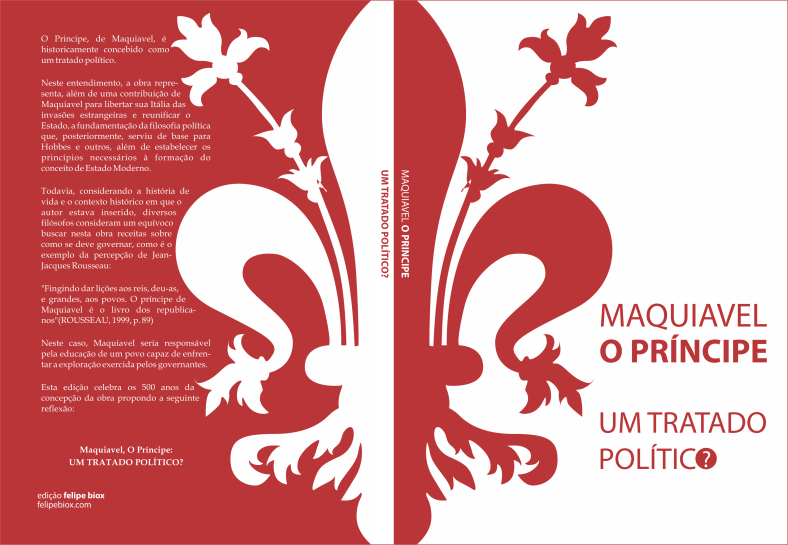
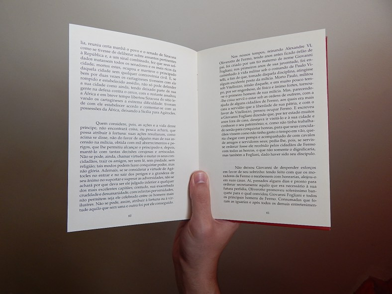
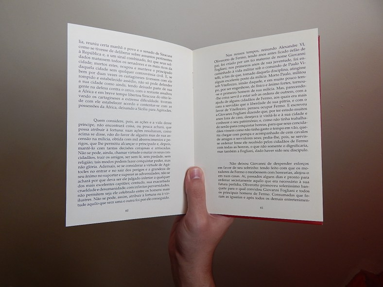

Maquiavel - O Príncipe
Este é o projeto editorial que desenvolvi para um trabalho conceitual. Trata-se do livro “O Príncipe”, de Maquiavel.
A idéia do projeto foi de apresentar uma versão comemorativa de 500 anos da publicação da obra, trazendo um questionamento amplamente debatido sobre ela: “seria a obra ‘O Príncipe’ um tratado político feito para os reis governarem; ou, uma forma de educar o povo contra um modelo de tirania?
Partindo dessa idéia, todos os elementos visuais projeto editorial foram pensados de forma a sugerir o questionamento e a dualidade. Desde as cores proeminentes do brasão de Florença, até às formas e diagramações. Abaixo seguem alguns exemplos.
A Capa
Através de pesquisa, identifiquei como elemento icônico da obra o símbolo do brasão de Florença. No processo de vetorização do brasão, fiz algumas pequenas alterações nas curvas para torná-las mais suaves.
Optei pelas cores vermelho vivo e branco, pois além de fazerem referência ao brasão original, elas podem representar idéias fortes da obra, como a violência e o sangue em contraste com a ordem e a paz. Além disso, para representar a idéia da dualidade, dividi o brasão exatamente no meio, distribuído pela capa, lombada e verso de forma a reforçar esse contraste. Assim, a própria lombada mantém a idéia central da identidade.
Com relação a mancha gráfica do texto, optei por contornar as formas do brasão apenas visando um apelo estético. Já a tipografia da palavra "político" foi pensada com a idéia de que a edição comemorativa poderia vir acompanhada de um brinde. No caso, o ícone que forma a letra "o" da palavra "político" seria um bottom com a identidade visual do livro, sugerindo ao mesmo tempo a pergunta: "Um tratado político?".
A Fonte

Na escolha da fonte, busquei uma com a qual eu já possuísse familiaridade de leitura e com boa leiturabilidade em parágrafos longos. Dentre as pesquisadas, escolhi a "Book Antiqua", que possui serifa e se enquadrou nos critérios estabelecidos.
A Mancha Gráfica
Uma coisa que me incomoda bastante em alguns livros é que muitas vezes a margem interna das páginas não oferece espaço suficiente para acomodar os dedos, isto quando não é ainda pior e o texto acaba se curvando para dentro da canoa do livro. Pensando nisso, optei por deixar uma margem maior no interior do livro, buscando um equilíbrio para também não comprometer a estética. Na configuração que escolhi, também é possível ler o livro segurando-o apenas com uma mão no centro, de forma que os dedos não atrapalham a leitura (minha posição de leitura favorita).
 

Foi já idealizando este resultado final que trabalhei no grid. Para isso, criei margens superior e inferior de 15mm, e laterais de 12mm, repetindo as margens laterais no interior das canoas. Após, criei um grid 6×6 no interior das margens. O próximo passo foi criar a margem de segurança no interior do livro, que obtive unindo a margem inicial à uma das colunas do grid, conforme ilustrado nas áreas hachuradas.

Ainda, considerei uma disposição diferente para as páginas que iniciam capítulos, uma decisão que baseou-se no gosto pessoal mesmo. Assim, defini que todo capítulo iniciaria-se com uma margem superior extra, acrescida de 2 fileiras do grid (1/3 da altura do grid), com o título do capítulo sempre se iniciando na página da esquerda, conforme ilustrado abaixo.
O Resultado